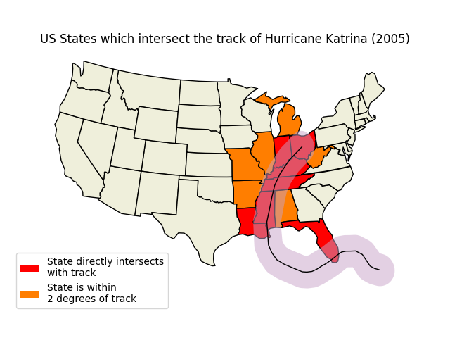

Hurricane Katrina¶
import matplotlib.patches as mpatches
import matplotlib.pyplot as plt
import shapely.geometry as sgeom
import cartopy.crs as ccrs
import cartopy.io.shapereader as shpreader
def sample_data():
"""
Returns a list of latitudes and a list of longitudes (lons, lats)
for Hurricane Katrina (2005).
The data was originally sourced from the HURDAT2 dataset from AOML/NOAA:
http://www.aoml.noaa.gov/hrd/hurdat/newhurdat-all.html on 14th Dec 2012.
"""
lons = [-75.1, -75.7, -76.2, -76.5, -76.9, -77.7, -78.4, -79.0,
-79.6, -80.1, -80.3, -81.3, -82.0, -82.6, -83.3, -84.0,
-84.7, -85.3, -85.9, -86.7, -87.7, -88.6, -89.2, -89.6,
-89.6, -89.6, -89.6, -89.6, -89.1, -88.6, -88.0, -87.0,
-85.3, -82.9]
lats = [23.1, 23.4, 23.8, 24.5, 25.4, 26.0, 26.1, 26.2, 26.2, 26.0,
25.9, 25.4, 25.1, 24.9, 24.6, 24.4, 24.4, 24.5, 24.8, 25.2,
25.7, 26.3, 27.2, 28.2, 29.3, 29.5, 30.2, 31.1, 32.6, 34.1,
35.6, 37.0, 38.6, 40.1]
return lons, lats
def main():
fig = plt.figure()
ax = fig.add_axes([0, 0, 1, 1], projection=ccrs.LambertConformal())
ax.set_extent([-125, -66.5, 20, 50], ccrs.Geodetic())
shapename = 'admin_1_states_provinces_lakes_shp'
states_shp = shpreader.natural_earth(resolution='110m',
category='cultural', name=shapename)
lons, lats = sample_data()
# to get the effect of having just the states without a map "background"
# turn off the outline and background patches
ax.background_patch.set_visible(False)
ax.outline_patch.set_visible(False)
ax.set_title('US States which intersect the track of '
'Hurricane Katrina (2005)')
# turn the lons and lats into a shapely LineString
track = sgeom.LineString(zip(lons, lats))
# buffer the linestring by two degrees (note: this is a non-physical
# distance)
track_buffer = track.buffer(2)
for state in shpreader.Reader(states_shp).geometries():
# pick a default color for the land with a black outline,
# this will change if the storm intersects with our track
facecolor = [0.9375, 0.9375, 0.859375]
edgecolor = 'black'
if state.intersects(track):
facecolor = 'red'
elif state.intersects(track_buffer):
facecolor = '#FF7E00'
ax.add_geometries([state], ccrs.PlateCarree(),
facecolor=facecolor, edgecolor=edgecolor)
ax.add_geometries([track_buffer], ccrs.PlateCarree(),
facecolor='#C8A2C8', alpha=0.5)
ax.add_geometries([track], ccrs.PlateCarree(),
facecolor='none', edgecolor='k')
# make two proxy artists to add to a legend
direct_hit = mpatches.Rectangle((0, 0), 1, 1, facecolor="red")
within_2_deg = mpatches.Rectangle((0, 0), 1, 1, facecolor="#FF7E00")
labels = ['State directly intersects\nwith track',
'State is within \n2 degrees of track']
ax.legend([direct_hit, within_2_deg], labels,
loc='lower left', bbox_to_anchor=(0.025, -0.1), fancybox=True)
plt.show()
if __name__ == '__main__':
main()
Total running time of the script: ( 0 minutes 0.254 seconds)